📋
MANUAL BOOK
Panduan Penggunaan Halaman Administrator
JITU — Sistem Perizinan Terpadu
Kabupaten Banjarnegara
Versi 1.0 — Juni 2026
| Judul |
Halaman |
BAB 1 Pendahuluan3 |
1.1 Tentang Aplikasi3 |
1.2 Tujuan Manual Book3 |
1.3 Peran Administrator3 |
1.4 Kebutuhan Sistem4 |
1.5 Struktur Menu Admin4 |
|
BAB 2 Login ke Sistem5 |
2.1 Langkah-Langkah Login5 |
2.2 Setelah Login Berhasil6 |
|
BAB 3 Dashboard (Beranda)7 |
3.1 Komponen Dashboard7 |
|
BAB 4 Master Data9 |
4.1 Data OPD9 |
4.2 Jenis Perijinan10 |
|
BAB 5 Data Perijinan12 |
5.1 Dalam Proses12 |
5.2 Perlu Perbaikan Pemohon13 |
5.3 Selesai13 |
5.4 Ditolak14 |
|
BAB 6 Frontpage15 |
6.1 Berita15 |
6.2 Regulasi16 |
6.3 Panduan17 |
|
BAB 7 Pengaduan18 |
|
BAB 8 SKM (Survey Kepuasan Masyarakat)20 |
8.1 Data SKM (Pertanyaan)20 |
8.2 Laporan SKM (Hasil Survey)21 |
|
BAB 9 Pengguna22 |
9.1 Data Pengguna22 |
9.2 Data Pemohon23 |
9.3 Data Pemerintah24 |
|
BAB 10 Pengaturan25 |
10.1 Petugas Pengaduan25 |
10.2 Pengaturan Aplikasi26 |
10.3 Pengaturan Email27 |
10.4 Database28 |
10.5 Log Aplikasi29 |
10.6 Log TTE30 |
|
BAB 11 Profil & Keamanan Akun31 |
|
BAB 12 Logout32 |
|
BAB 1
Pendahuluan
1.1 Tentang Aplikasi
JITU (Jaringan Izin Terpadu) adalah sistem informasi perizinan terpadu berbasis web yang dikembangkan untuk Pemerintah Kabupaten Banjarnegara. Aplikasi ini memfasilitasi proses pengajuan, verifikasi, dan penerbitan izin secara digital, sehingga mempercepat pelayanan perizinan kepada masyarakat.
1.2 Tujuan Manual Book
Manual book ini disusun sebagai panduan bagi Administrator Sistem dalam mengelola seluruh fitur dan modul yang tersedia pada halaman admin aplikasi JITU. Dokumen ini mencakup langkah-langkah penggunaan mulai dari login hingga pengaturan sistem.
1.3 Peran Administrator
Administrator memiliki hak akses penuh terhadap seluruh fitur sistem, meliputi:
- Mengelola data master (OPD, Jenis Perizinan)
- Memantau dan memproses permohonan perizinan
- Mengelola konten halaman publik (Berita, Regulasi, Panduan)
- Mengelola pengaduan masyarakat
- Mengelola Survey Kepuasan Masyarakat (SKM)
- Mengelola pengguna, pemohon, dan data pemerintah
- Mengatur konfigurasi aplikasi, email, dan database
- Melihat log aktivitas sistem dan log TTE (Tanda Tangan Elektronik)
1.4 Kebutuhan Sistem
| Komponen | Spesifikasi Minimum |
|---|
| Browser | Google Chrome, Mozilla Firefox, Microsoft Edge (versi terbaru) |
| Koneksi Internet | Broadband/WiFi stabil |
| Resolusi Layar | 1366 × 768 piksel atau lebih tinggi |
1.5 Struktur Menu Admin
Berikut adalah struktur menu yang tersedia pada halaman admin:
| Kategori | Menu | Sub-Menu |
|---|
| — | Beranda | — |
| MAIN | Master Data | Data OPD, Jenis Perijinan |
| Data Perijinan | Dalam Proses, Perlu Perbaikan, Selesai, Ditolak |
| FRONTPAGE | Berita | — |
| Regulasi | Jenis Regulasi, Data Regulasi |
| Panduan | — |
| — | Pengaduan | — |
| — | SKM | Data SKM, Laporan SKM |
| SETTING | Pengguna | Data Pengguna, Data Pemohon, Data Pemerintah |
| Pengaturan | Petugas Pengaduan, Pengaturan Aplikasi, Pengaturan Email, Database, Log Aplikasi, Log TTE |
BAB 2
Login ke Sistem
Untuk mengakses halaman admin, Anda harus melakukan proses login terlebih dahulu menggunakan akun administrator yang telah terdaftar.
2.1 Langkah-Langkah Login
- Buka browser web dan akses alamat URL aplikasi JITU, kemudian tambahkan
/login di belakang URL.
- Halaman login akan ditampilkan seperti gambar di bawah ini.
- Masukkan Username pada kolom yang tersedia.
- Masukkan Password pada kolom password. Anda dapat mengklik ikon mata (👁) untuk menampilkan/menyembunyikan password.
- Jawab pertanyaan CAPTCHA keamanan berupa penjumlahan sederhana (contoh: "5 + 3 = ?"). Masukkan jawabannya di kolom "Hasil". Klik tombol refresh (🔄) jika ingin mendapatkan soal baru.
- Centang "Ingat saya" jika Anda ingin tetap login pada sesi berikutnya (opsional).
- Klik tombol Login untuk masuk ke sistem.

[Tampilan Halaman Login JITU]
Halaman login menampilkan form dengan kolom Username, Password, dan CAPTCHA keamanan
Gambar 2.1 — Halaman Login JITU Banjarnegara
💡 Tips
Jika Anda lupa password, klik tautan "Lupa password?" yang terletak di bawah form login untuk melakukan reset password melalui email terdaftar.
⚠️ Perhatian
Sistem akan mengunci akun Anda sementara jika terdapat terlalu banyak percobaan login yang gagal. Tunggu beberapa saat sebelum mencoba kembali.
2.2 Setelah Login Berhasil
Setelah login berhasil, Anda akan diarahkan ke halaman Dashboard (Beranda). Pada sisi kiri layar terdapat sidebar navigasi yang menampilkan seluruh menu yang dapat diakses sesuai peran Anda.
BAB 3
Dashboard (Beranda)
Dashboard merupakan halaman utama setelah login yang menyajikan ringkasan informasi penting tentang seluruh aktivitas sistem perizinan.
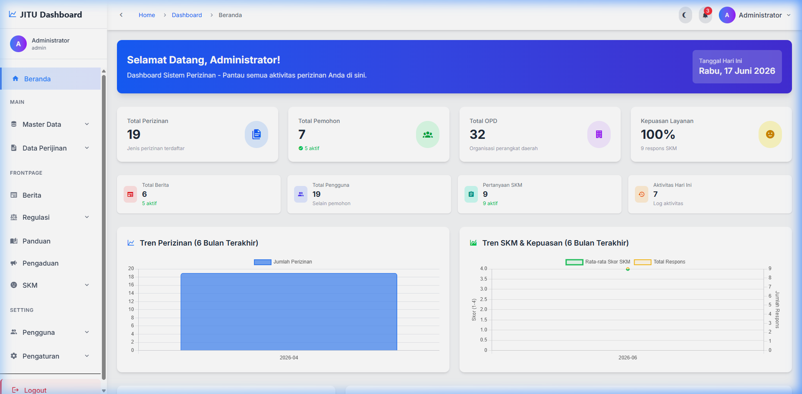
[Tampilan Dashboard Admin JITU]
Gambar 3.1 — Dashboard Admin JITU
3.1 Komponen Dashboard
Dashboard admin menampilkan beberapa komponen informasi berikut:
A. Banner Selamat Datang
Menampilkan nama pengguna yang sedang login beserta tanggal hari ini.
B. Kartu Statistik Utama
| Kartu | Keterangan |
|---|
| Total Perizinan | Jumlah jenis perizinan yang terdaftar dalam sistem |
| Total Pemohon | Jumlah pemohon terdaftar dan yang berstatus aktif |
| Total OPD | Jumlah Organisasi Perangkat Daerah yang terdaftar |
| Kepuasan Layanan | Persentase kepuasan masyarakat berdasarkan SKM |
C. Kartu Statistik Sekunder
Menampilkan Total Berita (aktif), Total Pengguna (selain pemohon), Pertanyaan SKM (aktif), dan jumlah Aktivitas Hari Ini.
D. Grafik Tren
- Tren Perizinan (6 Bulan Terakhir) — Grafik batang menunjukkan jumlah perizinan per bulan.
- Tren SKM & Kepuasan (6 Bulan Terakhir) — Grafik garis menampilkan rata-rata skor SKM dan jumlah respons per bulan.
E. Pengguna Berdasarkan Role
Menampilkan distribusi pengguna berdasarkan peran: Admin, Front Office, Back Office, Operator OPD, Kepala OPD, Verifikator, dan Kadin.
F. Aktivitas Terbaru
Menampilkan daftar log aktivitas terbaru dari seluruh pengguna sistem, termasuk jenis event (dibuat, diubah, dihapus, login, logout) beserta waktu kejadian.
G. Tabel Data Terbaru
Menampilkan tabel Perizinan Terbaru dan Pemohon Terbaru untuk memantau data yang baru masuk ke dalam sistem.
BAB 4
Master Data
Menu Master Data digunakan untuk mengelola data referensi yang menjadi dasar operasional sistem perizinan, yaitu Data OPD dan Jenis Perijinan.
4.1 Data OPD
Menu ini digunakan untuk mengelola data Organisasi Perangkat Daerah (OPD) yang terlibat dalam proses perizinan.
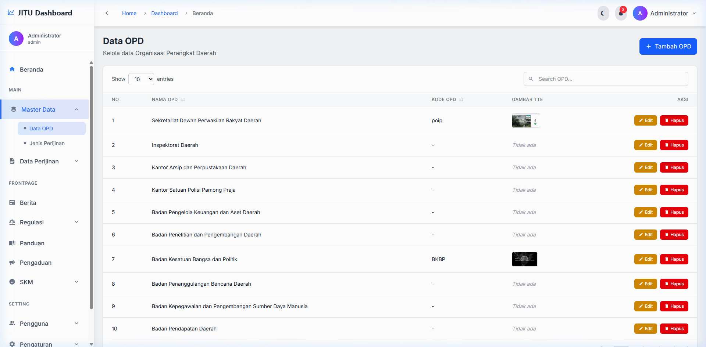
[Tampilan Halaman Data OPD]
Gambar 4.1 — Halaman Daftar Data OPD
Fitur yang Tersedia
| Fitur | Keterangan |
|---|
| Tambah OPD | Menambahkan data OPD baru |
| Pencarian | Mencari data OPD berdasarkan nama |
| Sortir Kolom | Mengurutkan data berdasarkan Nama OPD atau Kode OPD |
| Show Entries | Mengatur jumlah data yang ditampilkan per halaman (10, 25, 50, 100) |
| Edit | Mengubah data OPD yang sudah ada |
| Hapus | Menghapus data OPD |
| Preview TTE | Melihat gambar Tanda Tangan Elektronik OPD (klik pada gambar) |
Cara Menambahkan OPD Baru
- Klik tombol Tambah OPD di pojok kanan atas halaman.
- Isi kolom Nama OPD (wajib diisi).
- Isi kolom Kode OPD (opsional).
- Unggah Gambar TTE (Tanda Tangan Elektronik) jika ada. Format yang didukung: JPEG, PNG, JPG, GIF, SVG. Ukuran maksimal: 2MB.
- Klik Simpan untuk menyimpan data, atau Batal untuk membatalkan.
⚠️ Perhatian
Data OPD yang sudah terhubung dengan jenis perizinan tidak dapat dihapus. Pastikan tidak ada keterkaitan data sebelum menghapus OPD.
4.2 Jenis Perijinan
Menu ini digunakan untuk mengelola berbagai jenis perizinan yang dapat diajukan oleh masyarakat. Setiap jenis perizinan memiliki pengaturan tersendiri termasuk formulir pengajuan, alur validasi, dan template dokumen.
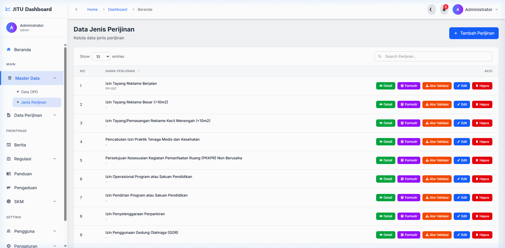
[Tampilan Halaman Jenis Perijinan]
Gambar 4.2 — Halaman Daftar Jenis Perijinan
Fitur yang Tersedia
| Fitur | Keterangan |
|---|
| Tambah Perijinan | Membuat jenis perizinan baru |
| Detail | Melihat detail lengkap perizinan |
| Form Builder | Mengelola formulir pengajuan (field-field yang harus diisi pemohon) |
| Alur Validasi | Mengatur tahapan validasi/verifikasi perizinan |
| Edit | Mengubah data perizinan |
| Hapus | Menghapus jenis perizinan |
Cara Menambahkan Jenis Perijinan Baru
- Klik tombol Tambah Perijinan.
- Isi informasi dasar: Nama Perijinan, Dasar Hukum, Persyaratan, dan OPD terkait.
- Atur SLA (Service Level Agreement) dalam satuan hari kerja.
- Unggah Template Surat Rekomendasi dan/atau Template Surat Izin (format .docx).
- Klik Simpan.
Form Builder
Form Builder memungkinkan admin untuk membuat formulir pengajuan secara dinamis dengan berbagai tipe field:
- Text — Input teks singkat
- Textarea — Input teks panjang
- Number — Input angka
- Date — Pemilih tanggal
- Select — Dropdown pilihan
- File — Upload dokumen
- Radio — Pilihan tunggal
- Checkbox — Pilihan ganda
Alur Validasi
Admin dapat mengatur tahapan validasi perizinan secara berurutan. Setiap tahap memiliki penanggung jawab (role) yang berbeda. Tahapan dapat diurutkan ulang dengan fitur drag & drop.
BAB 5
Data Perijinan
Menu Data Perijinan digunakan untuk memantau dan mengelola seluruh permohonan perizinan yang masuk dari pemohon. Data dikelompokkan berdasarkan status pemrosesan.
5.1 Dalam Proses
Menampilkan daftar permohonan perizinan yang sedang dalam tahap pemrosesan (belum selesai dan belum ditolak).
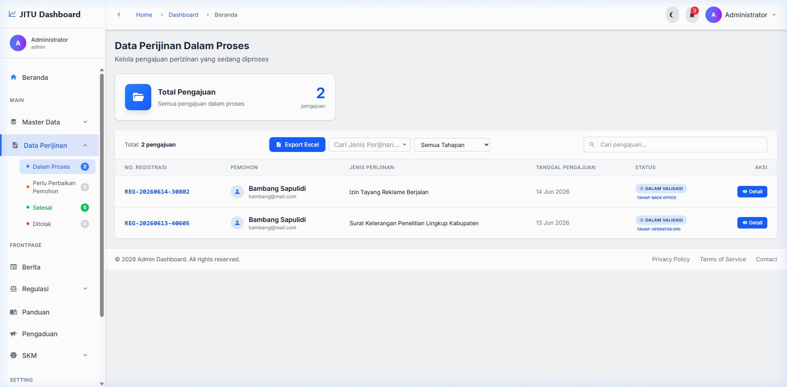
[Tampilan Data Perijinan - Dalam Proses]
Gambar 5.1 — Halaman Data Perijinan Dalam Proses
Informasi yang Ditampilkan
- No. Registrasi — Nomor unik permohonan
- Nama Pemohon — Nama pemohon yang mengajukan
- Jenis Perizinan — Tipe izin yang diajukan
- Tanggal Pengajuan — Waktu pengajuan
- Status Tahap — Posisi permohonan dalam alur validasi
- SLA — Indikator batas waktu penyelesaian
Aksi yang Tersedia
- Klik Detail untuk melihat informasi lengkap permohonan.
- Pada halaman detail, admin dapat melakukan validasi/verifikasi sesuai tahapan alur.
- Admin dapat mengisi data rekomendasi atau data izin yang diperlukan untuk dokumen.
- Klik Export Excel untuk mengekspor data ke format Excel.
ℹ️ Informasi
Halaman detail permohonan menyediakan fitur lengkap termasuk: preview dokumen, TTE (Tanda Tangan Elektronik), regenerasi dokumen, dan riwayat validasi.
5.2 Perlu Perbaikan Pemohon
Menampilkan permohonan yang dikembalikan ke pemohon karena terdapat data atau dokumen yang perlu diperbaiki. Pemohon akan menerima notifikasi untuk melakukan koreksi pada pengajuannya.
5.3 Selesai
Menampilkan permohonan perizinan yang telah selesai diproses dan izin telah diterbitkan.
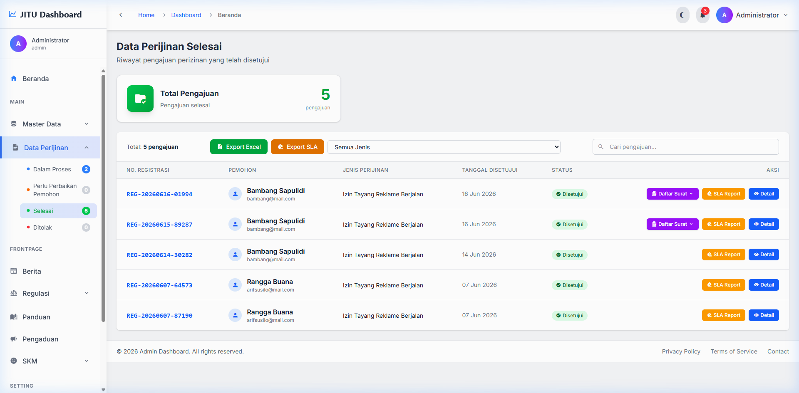
[Tampilan Data Perijinan - Selesai]
Gambar 5.2 — Halaman Data Perijinan Selesai
Fitur Tambahan pada Tab Selesai
- Export Excel — Mengekspor seluruh data perizinan selesai
- Export SLA — Mengekspor laporan SLA (Service Level Agreement) untuk analisis kinerja
- Laporan SLA — Melihat laporan detail capaian SLA per permohonan
5.4 Ditolak
Menampilkan permohonan perizinan yang ditolak beserta alasan penolakannya. Data ini tersimpan untuk keperluan dokumentasi dan audit.
BAB 6
Frontpage
Menu Frontpage digunakan untuk mengelola konten yang ditampilkan pada halaman publik (landing page) aplikasi JITU yang dapat diakses oleh masyarakat umum.
6.1 Berita
Menu untuk mengelola berita dan informasi yang akan ditampilkan pada halaman publik aplikasi.
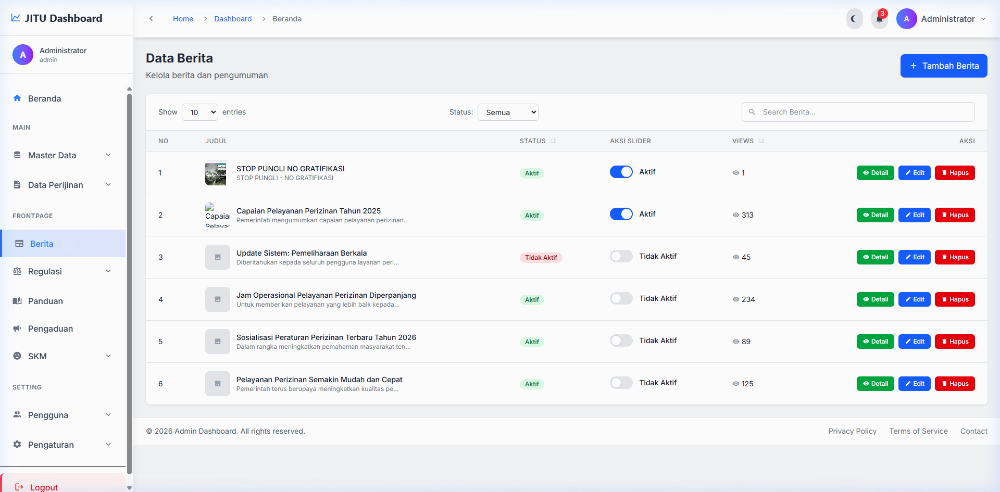
[Tampilan Halaman Berita]
Gambar 6.1 — Halaman Daftar Berita
Fitur yang Tersedia
| Fitur | Keterangan |
|---|
| Tambah Berita | Membuat berita baru |
| Toggle Slider | Mengatur apakah berita ditampilkan di slider halaman utama |
| Detail | Melihat preview lengkap berita |
| Edit | Mengubah konten berita |
| Hapus | Menghapus berita |
Cara Menambahkan Berita
- Klik tombol Tambah Berita.
- Isi Judul Berita.
- Tulis Konten/Isi Berita menggunakan editor teks.
- Unggah Gambar Berita sebagai thumbnail.
- Atur status berita (Aktif/Tidak Aktif) dan opsi slider.
- Klik Simpan.
6.2 Regulasi
Menu Regulasi terbagi menjadi dua sub-menu:
A. Jenis Regulasi
Mengelola kategori/jenis regulasi seperti: Peraturan Daerah, Peraturan Bupati, SK Bupati, dll.
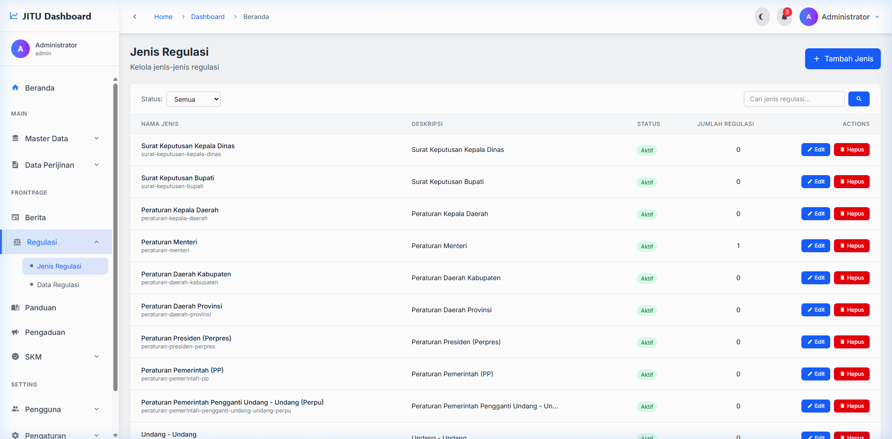
[Tampilan Halaman Jenis Regulasi]
Gambar 6.2 — Halaman Jenis Regulasi
- Klik Tambah Jenis Regulasi.
- Masukkan Nama Jenis Regulasi dan Deskripsi.
- Klik Simpan.
B. Data Regulasi
Mengelola dokumen regulasi yang dapat diakses dan diunduh oleh publik.
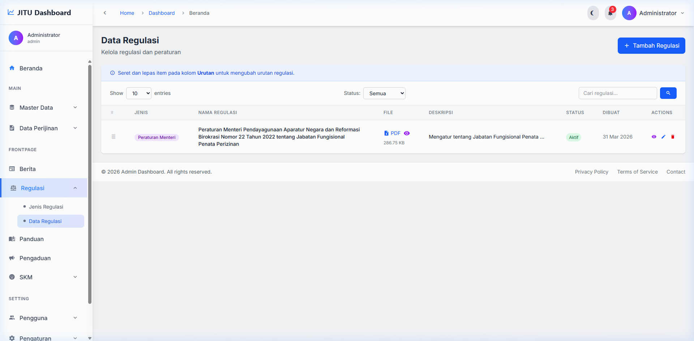
[Tampilan Halaman Data Regulasi]
Gambar 6.3 — Halaman Data Regulasi
- Klik Tambah Regulasi.
- Pilih Jenis Regulasi dari dropdown.
- Isi Nomor Regulasi, Judul, dan Tahun.
- Unggah File Dokumen regulasi (format PDF).
- Klik Simpan.
6.3 Panduan
Menu untuk mengelola panduan/petunjuk yang dapat diakses oleh masyarakat pada halaman publik.
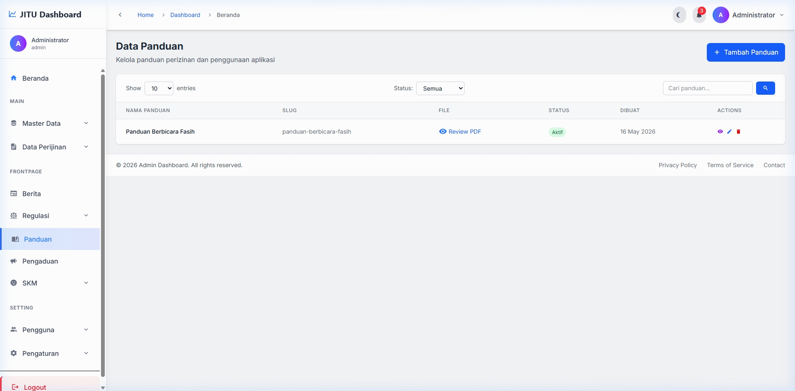
[Tampilan Halaman Panduan]
Gambar 6.4 — Halaman Daftar Panduan
- Klik Tambah Panduan.
- Isi Judul Panduan dan Konten.
- Atur Status (Aktif/Tidak Aktif).
- Klik Simpan.
- Klik Preview untuk melihat tampilan panduan.
BAB 7
Pengaduan
Menu Pengaduan digunakan untuk mengelola pengaduan/keluhan yang disampaikan oleh masyarakat melalui halaman publik aplikasi.
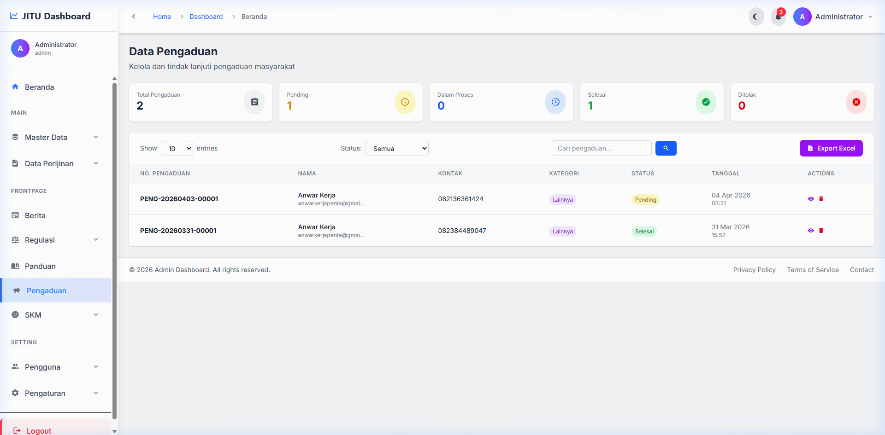
[Tampilan Halaman Data Pengaduan]
Gambar 7.1 — Halaman Data Pengaduan
Ringkasan Statistik
Di bagian atas halaman, ditampilkan kartu ringkasan statistik pengaduan:
- Total — Jumlah seluruh pengaduan
- Pending — Pengaduan yang belum ditangani
- Dalam Proses — Pengaduan yang sedang diproses
- Selesai — Pengaduan yang telah ditanggapi
- Ditolak — Pengaduan yang ditolak
Fitur yang Tersedia
| Fitur | Keterangan |
|---|
| Filter Status | Memfilter pengaduan berdasarkan status (Semua, Pending, Dalam Proses, Selesai, Ditolak) |
| Pencarian | Mencari pengaduan berdasarkan kata kunci |
| Export Excel | Mengekspor data pengaduan ke format Excel |
| Detail | Melihat detail lengkap pengaduan |
| Update Status | Mengubah status pengaduan (Pending → Dalam Proses → Selesai/Ditolak) |
| Download Lampiran | Mengunduh file lampiran yang disertakan pemohon |
| Hapus | Menghapus data pengaduan |
Cara Menangani Pengaduan
- Buka halaman Pengaduan dan identifikasi pengaduan berstatus Pending.
- Klik Detail untuk melihat isi pengaduan.
- Tinjau informasi pengaduan: nama pelapor, isi pengaduan, dan lampiran (jika ada).
- Klik tombol Update Status untuk mengubah status menjadi "Dalam Proses" atau langsung "Selesai".
- Berikan tanggapan/resolusi terhadap pengaduan tersebut.
BAB 8
SKM (Survey Kepuasan Masyarakat)
Menu SKM digunakan untuk mengelola survey kepuasan masyarakat terhadap layanan perizinan. Terdiri dari dua sub-menu: Data SKM (pengelolaan pertanyaan) dan Laporan SKM (hasil survey).
8.1 Data SKM (Pertanyaan)
Menu untuk mengelola pertanyaan-pertanyaan yang ditampilkan pada formulir SKM yang diisi oleh masyarakat.
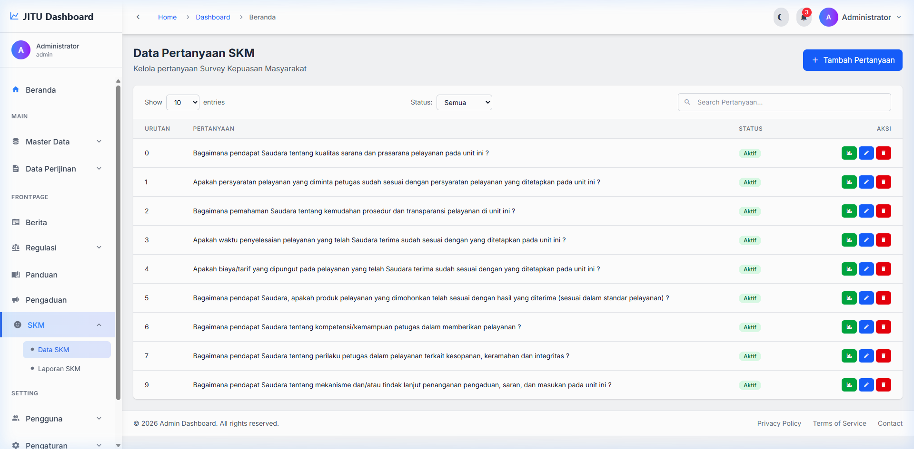
[Tampilan Halaman Data SKM]
Gambar 8.1 — Halaman Data Pertanyaan SKM
Fitur yang Tersedia
| Fitur | Keterangan |
|---|
| Tambah Pertanyaan | Menambahkan pertanyaan baru ke survey |
| Urutan | Mengatur urutan tampilan pertanyaan |
| Status | Mengaktifkan/menonaktifkan pertanyaan |
| Statistik | Melihat statistik jawaban per pertanyaan |
| Edit | Mengubah isi pertanyaan |
| Hapus | Menghapus pertanyaan |
Cara Menambahkan Pertanyaan SKM
- Klik Tambah Pertanyaan.
- Masukkan Pertanyaan yang ingin ditanyakan.
- Atur Urutan tampilan pertanyaan.
- Atur Status (Aktif/Tidak Aktif).
- Klik Simpan.
8.2 Laporan SKM (Hasil Survey)
Menampilkan hasil survey kepuasan masyarakat beserta analisis statistiknya.
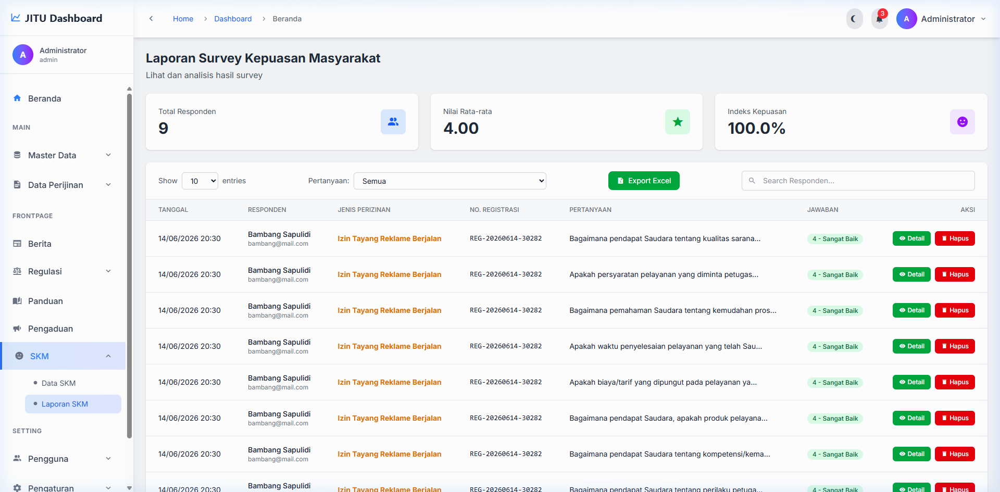
[Tampilan Halaman Laporan SKM]
Gambar 8.2 — Halaman Laporan SKM
Informasi yang Ditampilkan
- Total Responden — Jumlah masyarakat yang mengisi survey
- Nilai Rata-rata — Skor rata-rata dari seluruh jawaban (skala 1-4)
- Indeks Kepuasan — Persentase tingkat kepuasan masyarakat
- Tabel Detail — Rincian jawaban per responden dengan informasi: tanggal, nama, jenis izin, nomor registrasi, pertanyaan, dan skor
Fitur Laporan
- Export Excel — Mengunduh seluruh data hasil SKM ke format Excel
- Filter Pertanyaan — Memfilter hasil berdasarkan pertanyaan tertentu
- Statistik — Melihat grafik dan analisis statistik mendalam
BAB 9
Pengguna
Menu Pengguna digunakan untuk mengelola seluruh akun pengguna dalam sistem, terdiri dari tiga sub-menu: Data Pengguna, Data Pemohon, dan Data Pemerintah.
9.1 Data Pengguna
Mengelola akun pengguna internal sistem (selain pemohon) seperti admin, front office, back office, operator OPD, kepala OPD, verifikator, dan kadin.
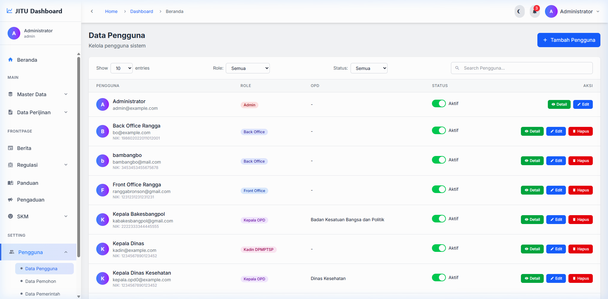
[Tampilan Halaman Data Pengguna]
Gambar 9.1 — Halaman Data Pengguna
Role Pengguna yang Tersedia
| Role | Deskripsi |
|---|
| Admin | Akses penuh ke seluruh fitur sistem |
| Front Office (FO) | Menangani penerimaan berkas dari pemohon |
| Back Office (BO) | Menangani pemrosesan berkas perizinan |
| Operator OPD | Operator dari OPD terkait untuk memproses perizinan |
| Kepala OPD | Pimpinan OPD untuk menyetujui/menolak perizinan |
| Verifikator | Melakukan verifikasi data dan dokumen perizinan |
| Kadin | Kepala Dinas untuk persetujuan akhir |
Cara Menambahkan Pengguna Baru
- Klik Tambah Pengguna.
- Isi data pengguna: Nama, Email, NIK, Username.
- Pilih Role/Peran dari dropdown.
- Pilih OPD terkait (jika role memerlukan OPD).
- Buat Password untuk akun baru.
- Klik Simpan.
Manajemen Status Akun
Admin dapat mengaktifkan atau menonaktifkan akun pengguna melalui toggle status pada tabel. Pengguna yang dinonaktifkan tidak dapat login ke sistem.
9.2 Data Pemohon
Mengelola data pemohon (masyarakat) yang telah mendaftar untuk mengajukan perizinan.
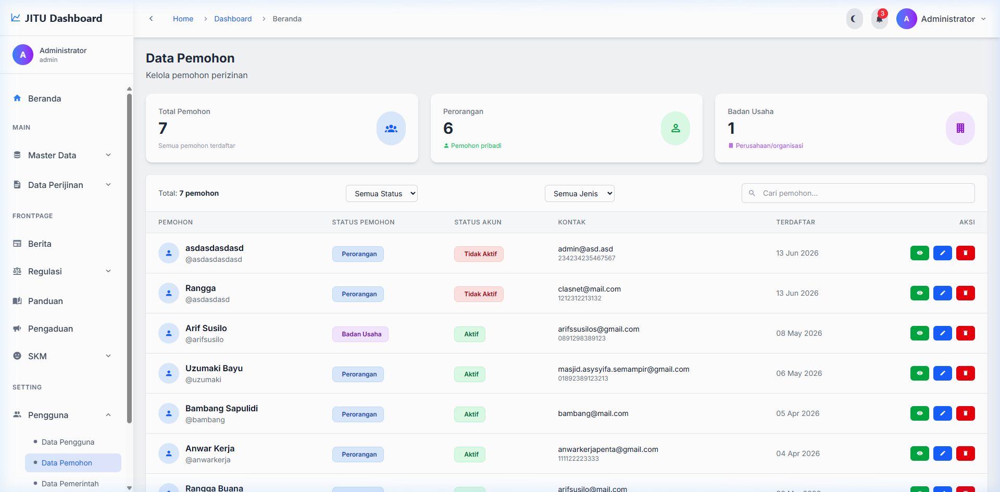
[Tampilan Halaman Data Pemohon]
Gambar 9.2 — Halaman Data Pemohon
Ringkasan Statistik
Menampilkan kartu ringkasan: Total Pemohon, jumlah pemohon Perorangan, dan jumlah pemohon Badan Usaha.
Fitur yang Tersedia
- Filter — Memfilter berdasarkan tipe pemohon (Perorangan/Badan Usaha) dan status akun
- Pencarian — Mencari pemohon berdasarkan nama, username, atau email
- Detail — Melihat informasi lengkap pemohon termasuk foto KTP
- Edit — Mengubah data pemohon
- Hapus — Menghapus akun pemohon
- Ubah Status — Mengaktifkan/menonaktifkan akun pemohon
9.3 Data Pemerintah
Mengelola data pengguna dari instansi pemerintah yang memiliki akses khusus untuk proses perizinan.
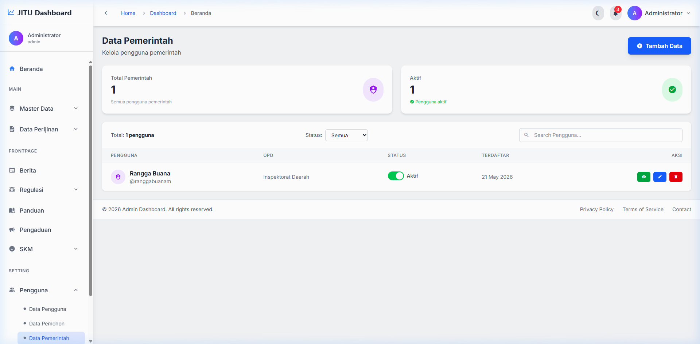
[Tampilan Halaman Data Pemerintah]
Gambar 9.3 — Halaman Data Pemerintah
Cara Menambahkan Data Pemerintah
- Klik Tambah Data.
- Isi informasi: Nama, NIP, Jabatan, Email.
- Pilih OPD yang terkait.
- Atur Role dan Status akun.
- Klik Simpan.
BAB 10
Pengaturan
Menu Pengaturan berisi konfigurasi sistem yang hanya dapat diakses oleh administrator. Perubahan pada pengaturan ini akan mempengaruhi keseluruhan operasional aplikasi.
10.1 Petugas Pengaduan
Menu untuk menunjuk pengguna internal sebagai petugas yang bertanggung jawab menangani pengaduan masyarakat.
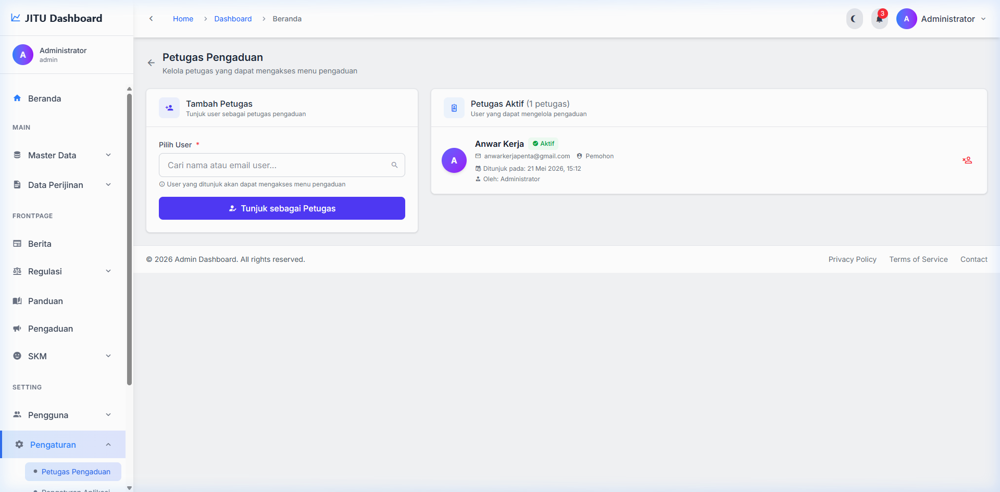
[Tampilan Halaman Petugas Pengaduan]
Gambar 10.1 — Halaman Petugas Pengaduan
Cara Menambahkan Petugas
- Pada bagian "Tambah Petugas", ketik nama atau username pengguna pada kolom pencarian.
- Pilih pengguna dari hasil pencarian yang muncul.
- Klik Tambah Sebagai Petugas.
- Pengguna yang ditunjuk akan muncul pada daftar petugas aktif di bawahnya.
Cara Menghapus Petugas
Klik tombol Hapus pada baris petugas yang ingin dihapus dari daftar penanganan pengaduan.
10.2 Pengaturan Aplikasi
Menu ini berisi konfigurasi umum aplikasi yang terbagi dalam beberapa tab:
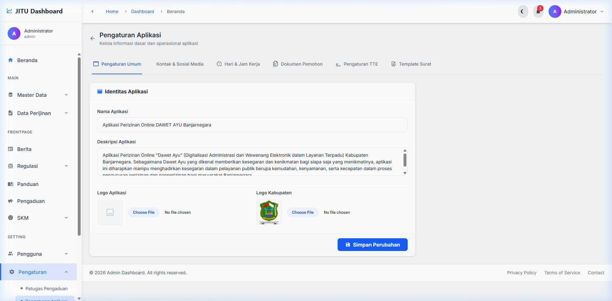
[Tampilan Halaman Pengaturan Aplikasi]
Gambar 10.2 — Halaman Pengaturan Aplikasi
| Tab | Keterangan |
|---|
| Pengaturan Umum | Nama aplikasi, deskripsi, logo aplikasi, dan logo kabupaten |
| Kontak & Sosial Media | Alamat, telepon, email, dan tautan media sosial |
| Hari & Jam Kerja | Pengaturan hari kerja, jam operasional, dan hari libur |
| Dokumen Pemohon | Mengelola jenis dokumen yang harus diunggah pemohon |
| Pengaturan TTE | Konfigurasi Tanda Tangan Elektronik (e-Sign API) |
| Template Surat | Pengaturan template surat rekomendasi dan izin |
🚨 Penting
Perubahan pada Pengaturan Aplikasi akan langsung berdampak pada seluruh sistem. Pastikan Anda memahami setiap konfigurasi sebelum melakukan perubahan.
Cara Mengubah Pengaturan
- Pilih tab pengaturan yang ingin diubah.
- Modifikasi data sesuai kebutuhan.
- Klik tombol Simpan Perubahan di bagian bawah halaman.
10.3 Pengaturan Email
Konfigurasi server email (SMTP) yang digunakan sistem untuk mengirim notifikasi kepada pengguna dan pemohon.
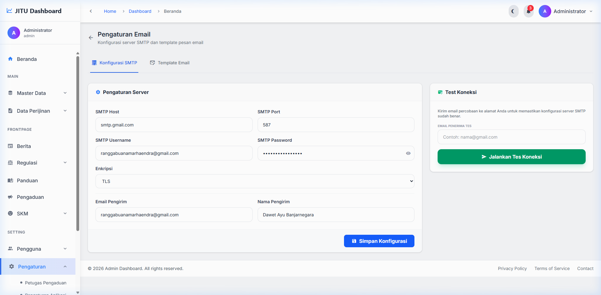
[Tampilan Halaman Pengaturan Email]
Gambar 10.3 — Halaman Pengaturan Email
Tab Konfigurasi SMTP
| Field | Keterangan |
|---|
| SMTP Host | Alamat server SMTP (contoh: smtp.gmail.com) |
| SMTP Port | Port server SMTP (contoh: 587) |
| Username | Alamat email pengirim |
| Password | App password email |
| Encryption | Tipe enkripsi (TLS/SSL) |
| Sender Email | Alamat email pengirim yang ditampilkan |
| Sender Name | Nama pengirim yang ditampilkan |
Fitur Test Connection
Gunakan panel "Test Connection" di sebelah kanan untuk menguji konfigurasi SMTP dengan mengirimkan email percobaan ke alamat email tertentu.
Tab Template Email
Pada tab Template Email, admin dapat mengkustomisasi template email notifikasi yang dikirimkan oleh sistem (registrasi, reset password, notifikasi perizinan, dll).
10.4 Database
Menu untuk mengelola backup dan restore database serta file aplikasi.
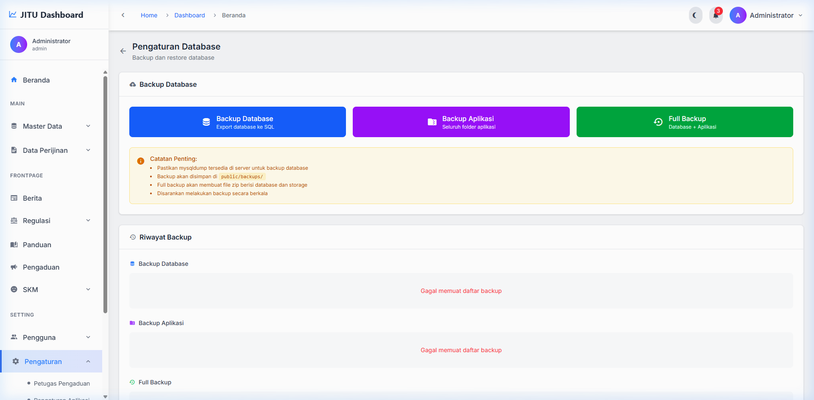
[Tampilan Halaman Pengaturan Database]
Gambar 10.4 — Halaman Pengaturan Database
Opsi Backup
| Tipe Backup | Keterangan |
|---|
| Backup Database | Membuat cadangan seluruh data database |
| Backup Aplikasi | Membuat cadangan file-file aplikasi |
| Full Backup | Membuat cadangan lengkap (database + file aplikasi) |
Riwayat Backup
Bagian bawah halaman menampilkan daftar backup yang pernah dibuat, beserta opsi untuk Download atau Hapus file backup.
💡 Tips
Lakukan backup secara berkala (minimal seminggu sekali) untuk menjaga keamanan data. Simpan salinan backup di lokasi terpisah dari server.
10.5 Log Aplikasi
Halaman ini menampilkan seluruh catatan aktivitas (audit trail) yang terjadi dalam sistem untuk keperluan monitoring dan audit.
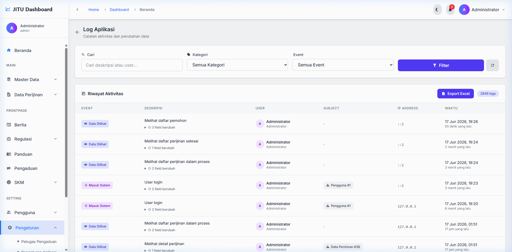
[Tampilan Halaman Log Aplikasi]
Gambar 10.5 — Halaman Log Aplikasi
Informasi yang Ditampilkan
| Kolom | Keterangan |
|---|
| Event | Jenis aktivitas (Created, Updated, Deleted, Login, Logout) |
| Deskripsi | Keterangan detail aktivitas yang dilakukan |
| Pengguna | Pengguna yang melakukan aktivitas |
| Subjek | Objek/data yang terpengaruh |
| IP Address | Alamat IP pengguna |
| Waktu | Tanggal dan jam aktivitas |
Fitur Filter & Export
- Pencarian — Mencari log berdasarkan kata kunci
- Filter Kategori — Memfilter berdasarkan tipe data (Semua, OPD, Perizinan, Berita, dll.)
- Filter Event — Memfilter berdasarkan jenis event (Created, Updated, Deleted, dll.)
- Export Excel — Mengekspor seluruh log ke format Excel
10.6 Log TTE
Menampilkan riwayat aktivitas Tanda Tangan Elektronik (TTE/e-Sign) yang dilakukan pada dokumen perizinan. Berguna untuk audit trail penandatanganan digital.
BAB 11
Profil & Keamanan Akun
Menu Profil diakses melalui header navigasi bagian kanan atas atau melalui ikon profil pada sidebar.
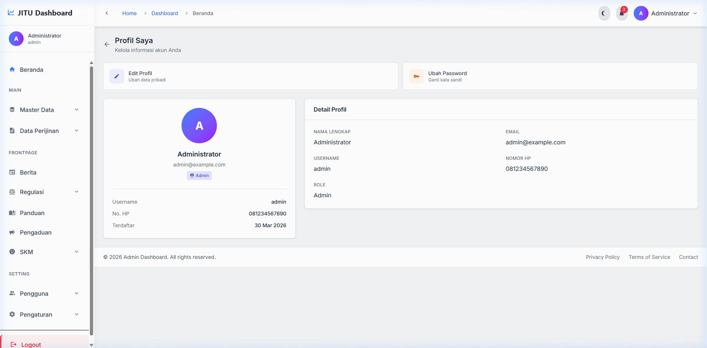
[Tampilan Halaman Profil Saya]
Gambar 11.1 — Halaman Profil Saya
11.1 Melihat Profil
Halaman profil menampilkan informasi akun Anda: Nama, Email, Username, Nomor Telepon, dan Role/Peran.
11.2 Edit Profil
- Klik tombol Edit Profil.
- Ubah informasi yang ingin diperbarui (Nama, Email, No. Telepon, dll.).
- Klik Simpan Perubahan.
11.3 Ubah Password
- Klik tombol Ubah Password.
- Masukkan Password Lama untuk verifikasi.
- Masukkan Password Baru.
- Masukkan ulang Konfirmasi Password Baru.
- Klik Simpan Password.
💡 Tips Keamanan Password
- Gunakan kombinasi huruf besar, huruf kecil, angka, dan karakter khusus
- Panjang password minimal 8 karakter
- Jangan gunakan password yang sama dengan akun lain
- Ganti password secara berkala (disarankan setiap 3 bulan)
BAB 12
Logout
Untuk keluar dari sistem dan mengakhiri sesi login Anda:
- Klik tombol Logout yang terletak di bagian bawah sidebar navigasi (menu kiri).
- Sistem akan mengakhiri sesi Anda dan mengarahkan ke halaman login.
⚠️ Perhatian
Selalu lakukan logout setelah selesai menggunakan sistem, terutama jika Anda mengakses dari komputer publik atau bersama. Hal ini untuk menjaga keamanan akun dan data Anda.
ℹ️ Sesi Otomatis Berakhir
Sistem secara otomatis akan mengakhiri sesi login jika tidak ada aktivitas selama 120 menit (2 jam). Anda akan diminta untuk login kembali.